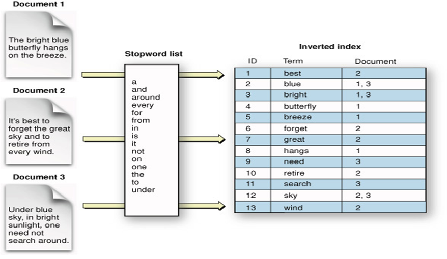
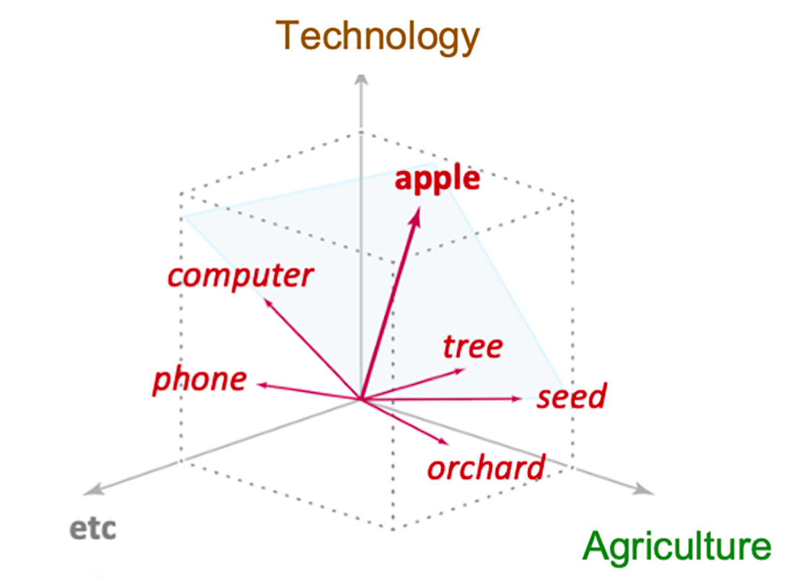
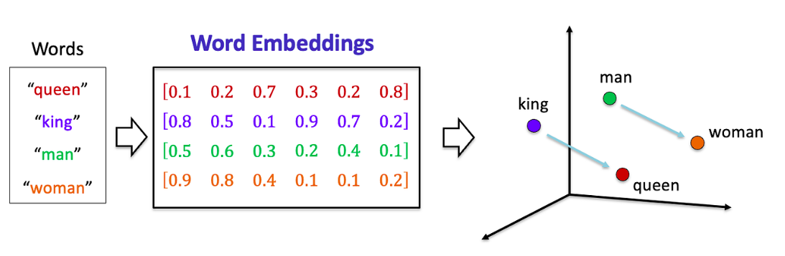
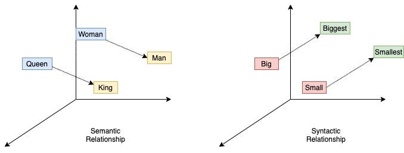
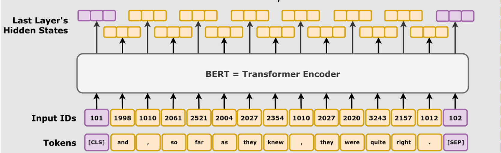
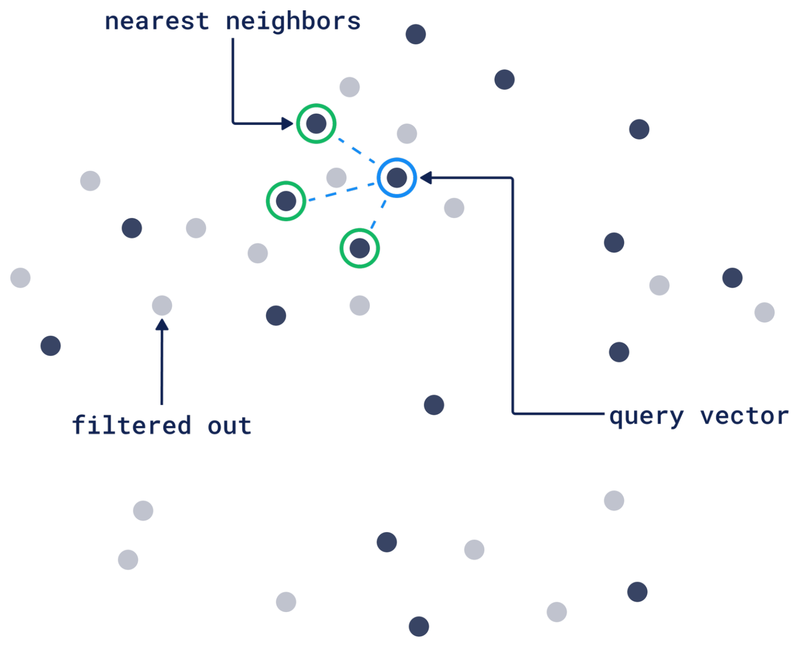
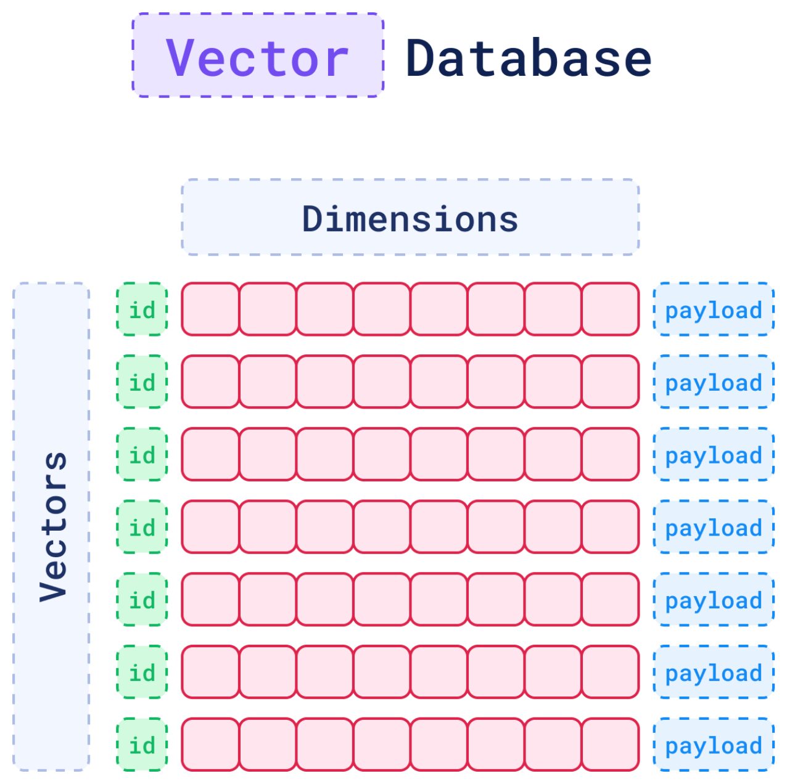

RAG: Retrieval Augmented Generation
One of the most useful applications enabled by LLMs is sophisticated question-answering (Q&A) chatbots. These are applications that can answer questions about specific source information.
- Large Language Models (LLMs) are useful, but they have two key limitations:
- Static knowledge — their training data is frozen at a point in time.
- Finite context — they can’t ingest entire corpora at once.
- Retrieval Augmented Generation (RAG) addresses these problems by fetching relevant out-of-training knowledge, and injecting it into the prompt before invoking the LLM, guiding the answer with context-specific information.
- In short, RAG is a three step process:
- Retrieval: find text relevant to answering the question
- Augmnetation: concatenate it into the prompt
- Generation: invoke the LLM
Keyword Search: Inverted Index

LangChain Retrievers Interface
A Retriever accept a string query as input and return a list of Document objects as output.
Retrievers can be created from vector stores, but are also broad enough to include Wikipedia search and Amazon Kendra.
{kind=link}
RAG Workflow
A simple RAG from question to answer, is shown below:

Embeddings
- Embeddings are numerical representations of real-world data - text, images, audio, videos, anything.
- Embedding Models are deep learning models which encode these inputs into vectors.
Applications of Embedding Models
Embeddings are commonly used for:
- Search (where results are ranked by relevance to a query string)
- Clustering (where text strings are grouped by similarity)
- Recommendations (where items with related text strings are recommended)
- Anomaly detection (where outliers with little relatedness are identified)
- Diversity measurement (where similarity distributions are analyzed)
- Classification (where text strings are classified by their most similar label)
Distributional Hypothesis
“You shall know a word by the company it keeps.” — J.R. Firth, 1957
Here’s the key insight: words that appear near similar words have similar meanings.
Polysemy Example: “Apple”
A word may have different meanings based on it’s context.
Fruit:
- I picked a red ___ from the tree in the backyard.
- The planted seeds in the orchard produced several ___ trees.
- ___ are my favorite type of fruit.
Technology:
- I mainly use my ___ iPhone to make phone calls.
- The ___ MacBook Pro is a computer with a powerful processor.
- I use an ___ computer to write emails and create documents.
Words as Vectors
An embedding model may represent these two meanings using two dimensions:

Vectors and relationships between words

- One dimension might represent “Gender”:
- positive for female
- negative for male
- Another might represent “Royalty”:
- High for both King & Queen
- low for both Man & Woman
Mathematical relationships:
\[\vec{\text{King}} - \vec{\text{Man}} + \vec{\text{Woman}} \approx \vec{\text{Queen}}\]
Embeddings Capture Syntactic, Semantic, and other Relationships
When visualized in 2D, embeddings show clear structure:

\[\vec{\text{Walking}} - \vec{\text{Walk}} + \vec{\text{Swim}} \approx \vec{\text{Swimming}}\] Embedding models learn these dimensions automatically from data. We don’t manually specify what each dimension means.
Similarity Metrics
Similarity metrics between two vectors can be:
- Eucledian Distance measured by the straight line between the two points
- Cosine of the Angle between the two vectors, when they are imagined as pointed lines from the origin onto the points in the space
{kind=link}
Cosine Similarity
Cosine Similarity measures the angle between two vectors (word embeddings):
- It ranges from -1 to 1
- 1.0 = vectors point in the same direction (~same)
- 0.0 = vectors are perpendicular (no relationship / indifference)
- -1.0 = vectors point in opposite directions (~opposite)
{kind=link}
\[\vec{\text{France}} - \vec{\text{Paris}} \approx \vec{\text{Rome}} - \vec{\text{Italy}}\]
Sentence Embeddings
BERT is an embedding model for a complete sentence.

Multi-modal Embeddings
- Beyond words, sentences, or even full pages or documents..
- encode, images, audio, or any type of data into vectors
{kind=link}
- Image-search: vectors for an image of a bird and it’s name, should be similar
- Voice-search: vectors for a sound of a bird chirping, and it’s species should be similar
- Q&A: vectors for a question and the document containing an answer should be similar
LangChain Embeddings Interface
- Embedding models transform raw text—such as a sentence, paragraph, or tweet—into a fixed-length vector of numbers that captures its semantic meaning.
- These vectors allow machines to compare and search text based on meaning rather than exact words.
LangChain provides a standard in erface for text embedding models (e.g., OpenAI, Cohere, Hugging Face) via the Embeddings interface.Two main methods are available:
embed_documents(texts: List[str]) → List[List[float]]: Embeds a list of documents.embed_query(text: str) → List[float]: Embeds a single query.
Select an Embedding Model
- See embedding models on OpenRouter.ai
- And OpenRouter Embeddings API on how to use them
LangChain Vector Stores Interface
{kind=link}
LangChain provides a unified interface for vector stores, allowing you to:
add_documents- Add documents to the store.delete- Remove stored documents by ID.similarity_search- Query for semantically similar documents.
This abstraction lets you switch between different implementations without altering your application logic.
Vector Search: Filtered Nearest Neighbors

Vector Database
